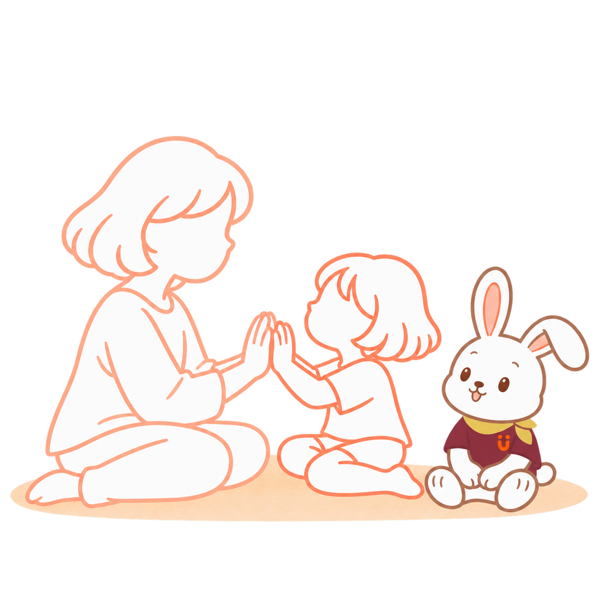
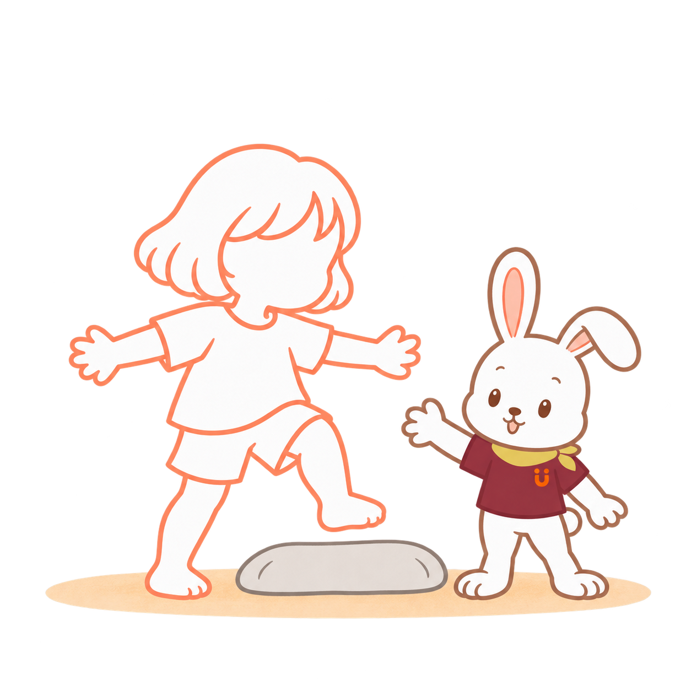
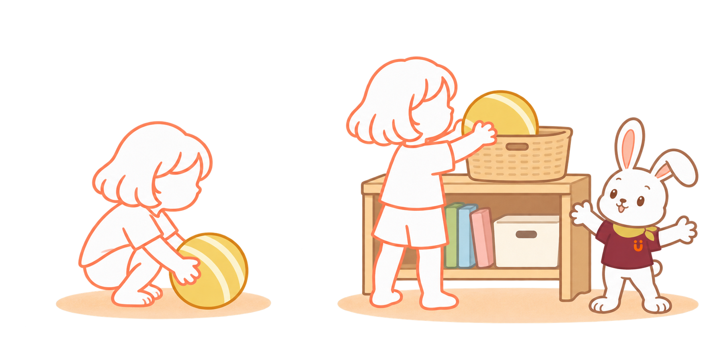
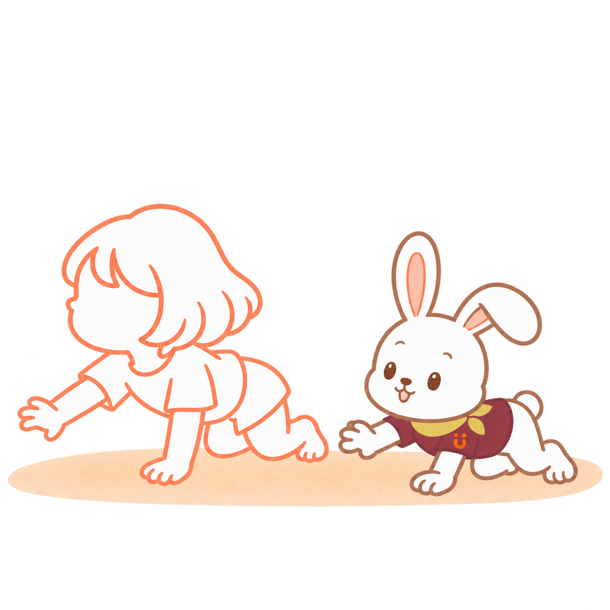
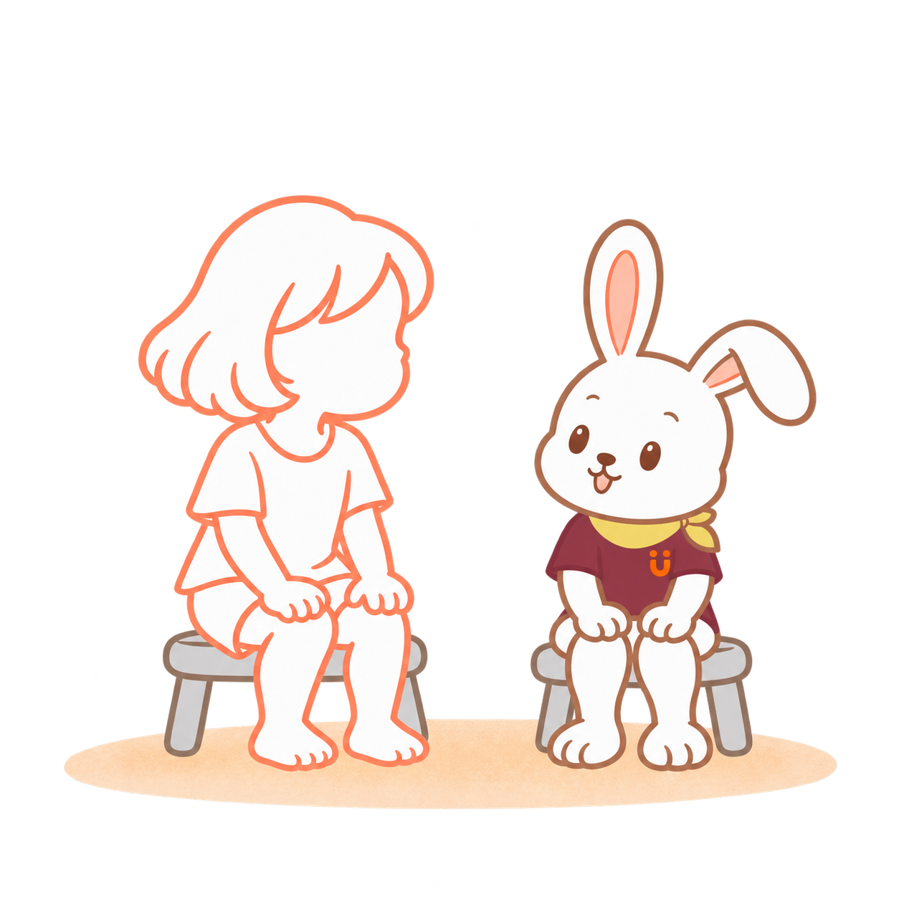
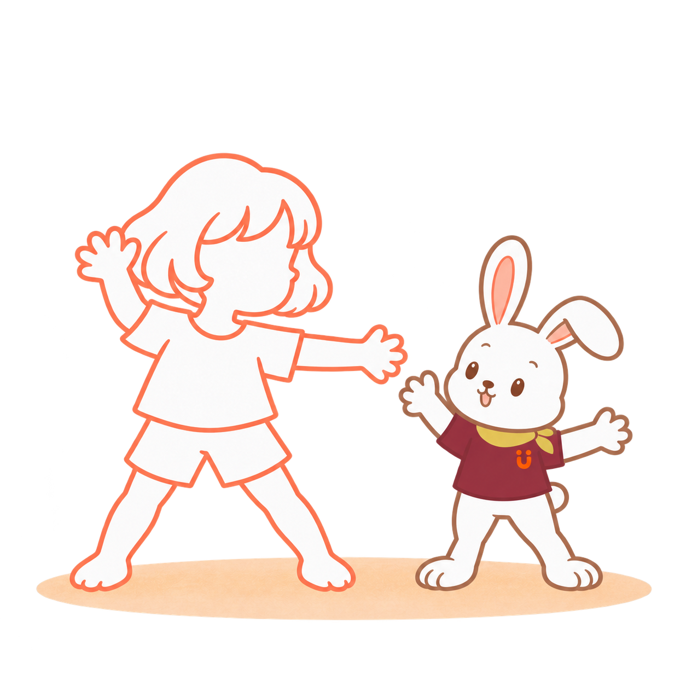

手のひら、押しっこ
ぐーっ。きみの ちから、つたわったね。
この絵の入口：やりとりで遊ぶ
大人が手を差し出し、触れてきたら軽く受け止める。まずは「ぴたっ」だけでも。
別の入口で遊ぶなら
まねして遊ぶ
Genが手のひらを前に出して見せる。子どもが同じように出したら、手を合わせる。
見てまねる。相手とやりとりする。気になるものに向かう。
その子の「やってみたい」から、入口を選びます。
動きを見て、やってみる。
触れる・応じる・まね返す。
取りたい・通りたいがきっかけ。
能力や年齢の分類ではありません。同じ遊びにも、複数の入口があります。
13の遊び

ぐーっ。きみの ちから、つたわったね。
この絵の入口：やりとりで遊ぶ
大人が手を差し出し、触れてきたら軽く受け止める。まずは「ぴたっ」だけでも。
Genが手のひらを前に出して見せる。子どもが同じように出したら、手を合わせる。

よいしょ。うしろの あしも。
この絵の入口：しかけで遊ぶ
広い場所に低いクッションを置く。越える・回り道する・触る。子どもが選ぶ動きから遊ぶ。
Genが低いクッションをまたいで見せる。子どもが試すのを待つ。

ちいさくなって。ぐーんと、とどけ！
この絵の入口：しかけで遊ぶ
好きなボールを床に、かごを無理なく届く位置に。「取りたい」「入れたい」を入口にする。
Genが、拾う→かごに入れる動きをゆっくり見せる。

のっし、のっし。どこへ いこう？
この絵の入口：まねして遊ぶ
Genが隣で四つばいに。子どもが進んだら、同じ速さでついていく。
短く広いトンネルの先に、気になるものを置く。のぞくだけ、別の近づき方でもよい。

おひざ、どこ？ ここ、ここ。
この絵の入口：まねして遊ぶ
Genが自分の膝に触れて見せる。言葉だけで求めず、見える動作で誘う。
子どもが嫌がらなければ、膝に大きな布をそっと置く。「あれ、ここにあった」と、取る遊びに。
布を取ることと、「おひざ」という言葉を理解して触ることは、別の姿として見ます。
PNGを保存 ↓
きみの ポーズ、ぼくも やってみよう。
この絵の入口：やりとりで遊ぶ
子どもが手を上げたら、Genも上げる。まずはGenがまねする側に。「きみと、おんなじ！」
Genが好きなポーズで止まる。子どもが同じ形を試してみる。

ふたりで、ちいさな おだんご。
この絵の入口：やりとりで遊ぶ
子どもが丸くなったら、Genも隣で小さくなる。子どもの動きから始める。
Genが膝を抱えて見せる。座って体を小さくするなど、その子なりの形で。

てを ひろげて。あしも、ひろげて。
この絵の入口：まねして遊ぶ
Genが手足を広げて見せる。座ったまま手だけ広げても。
子どもが手を広げたら、大人もぱっ。広げる・閉じるのやりとりに。

ごろん。もうひとつ、ごろん。
この絵の入口：まねして遊ぶ
Genが隣でゆっくり横向きに。子どもが試す動きに合わせる。
子どもが転がったら、大人も隣でごろん。手足を引いて転がさない。

あっちが、きになる？
この絵の入口：しかけで遊ぶ
短く広いトンネルを置き、入口や出口が見えるように。まずはのぞくだけでも。
向こう側から、こんにちは。子どもが見たら、大人も応じる。

でてきた！こんにちは。
この絵の入口：しかけで遊ぶ
出口側で待ち、子どもが自分から近づくのを見守る。通り抜けを急がせない。
Genが頭を低くしてくぐる姿を見せる。別の通り方や回り道でも。

ゆっくり、ふわり。ぴたっ。
この絵の入口：やりとりで遊ぶ
抱っこを求める仕草に応じ、体を支えて近くに抱く。支え方はその子に合わせ、連続して回さない。
PNGを保存 ↓
ふう。ぼくも、となりで。
この絵の入口：やりとりで遊ぶ
子どもが座ったら、大人も一緒に休む。再開を急がず、その子の様子を見る。
PNGを保存 ↓